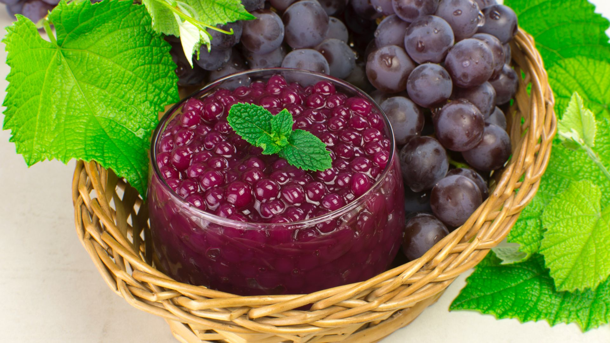

Sagu

El Sagu es un caso aparte que no tiene nada que ver con el papel
de nuestras GIRLFRIENDS por lo menos hasta ahora. Se Prepara con ingredientes
que solo mi hermana conseguiría en este momento y ni así
Ingredientes
- Bolitas que se ponen blanditas 987
- Vino tinto - 1 kg
- Azucar refinado ultrarefinado que sea blanco como los problemas de los yankis
- Sal a gusto (That's what she said)
Preparación
- Amaze varias pizzas con la botella de vino.
- Entienda que el TEATRO MAGICO solo para locos ya fue.
- Abra la botella de vino.
- Seguidamente
corra por la casa gritando que el postre es para los valientes.
- Pongale demasiada azucar y comasela.